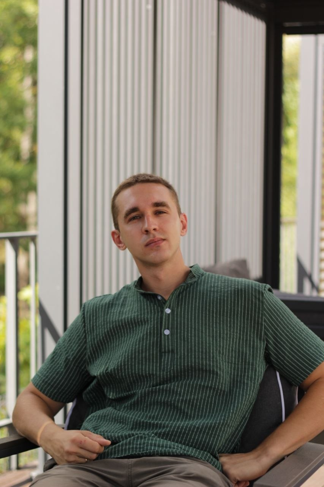

01
Backend-разработка
Проектирование и разработка масштабируемых микросервисов на Go.
Проектирую и разрабатываю backend-системы на Go. Больше четырёх лет в платежах и транзакционных сервисах, где корректность, низкая задержка и устойчивость под нагрузкой — обязательные условия.
Senior Go-разработчик с коммерческим опытом более 4 лет. Проектирую распределённые архитектуры и высокодоступные сервисы по принципам 12-Factor App. Уделяю серьёзное внимание дизайну баз данных, архитектуре систем и операционной надёжности того, что отправляется в продакшн.
Мой фон — финтех: платежи и транзакционные системы, где требуются корректность, низкие задержки и устойчивость под нагрузкой. Имею практический опыт проектирования event-driven архитектур и долгоживущих рабочих процессов для критичных сервисов. Сторонник Domain-Driven Design как основы для программ, которые отражают бизнес, который они обслуживают.
Работаю в AI-augmented подходе: использую агентные инструменты (Claude, Cursor), чтобы быстрее доставлять результат без потерь в качестве кода.

Проектирование и разработка масштабируемых микросервисов на Go.
Применение архитектурных принципов к сложным предметным областям.
Сервисы, которые надёжно работают под давлением — латентность, пропускная способность, отказы.
Проектирование схем, оптимизация запросов, эксплуатация в продакшне.
Глубокая экспертиза в Uber Temporal — и разработка, и эксплуатация.
Event-driven архитектуры, асинхронный обмен сообщениями, eventual consistency.
Keycloak, OAuth 2.0 / OIDC, безопасное управление идентификацией.
Предпочитаемый подход к моделированию сложных бизнес-доменов.
 Go
Go
 PostgreSQL
PostgreSQL
 ClickHouse
ClickHouse
 Redis
Redis
 Kafka
Kafka
 NATS
NATS
 Temporal
Temporal
 Keycloak
Keycloak
 OAuth 2.0
OAuth 2.0
 OIDC
OIDC
 Prometheus
Prometheus
 Grafana
Grafana
 Jaeger
Jaeger
 Docker
Docker
 Kubernetes
Kubernetes
 GitHub Actions
GitHub Actions
 GitLab CI
GitLab CI